Arrastra para girar · rueda o pellizco para acercar · toca un mueble
Cargando el modelo…
Estilo
Franja
Piso
Vistas
Mostrar
Luz
3,00 × 7,78 m
planta libre del primer piso (23,3 m²)
4,20 m
doble altura en el salón, de piso a techo
3,00 × 3,09 m
mezzanine a +2,32 m (9,3 m²), 1,88 m libres arriba
12 × 19,3 cm
escalera recta de 0,80 m con el estudio debajo
Tres estilos para el mismo apartamento
Los tres respetan lo que pediste: clósets y vitrina de tenis en el mezzanine, estudio con el PC bajo la escalera y cocina abierta con barra. La distribución y las medidas son las mismas; cambian los materiales, la luz y la decoración. Cada uno sale de un grupo distinto de las fotos que me mandaste. El D es el definitivo: junta lo que te gustó y quita lo que no.
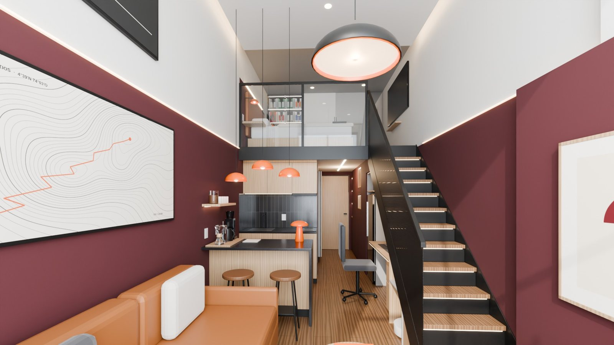
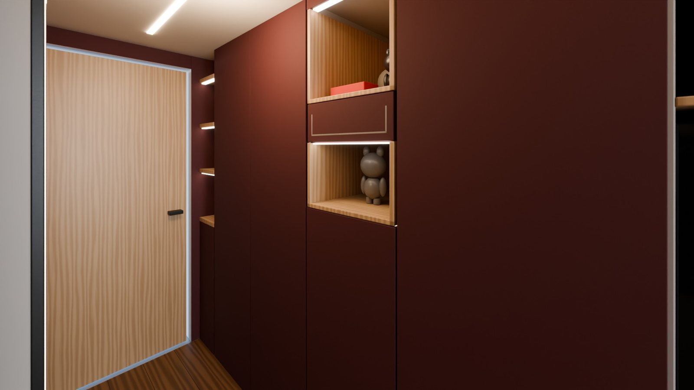
ESTILO D · DEFINITIVO
Vino, roble y naranja
El que elegiste. Una franja vino hasta la línea del mezzanine divide el espacio; arriba todo es blanco, con cielo raso de luz indirecta y lámparas que caen. Cuero cognac, roble, acero negro y arte tuyo. Sin ladrillo, sin paneles de madera en las paredes y sin pasteles.
Entrada con puertas ocultas, locker de la moto, galería y espejo con bisagras. Cocina con lavaplatos eléctrico, barra conectada y estación de café. TV tipo cuadro, Eames, escritorio de muro a muro y vitrina para 30 pares de tenis.
Piso
Roble medio
Muros
Vino hasta +2,32 m, blanco arriba
Techo
Drywall con luz indirecta
Escalera
Negra con huella en roble
Baño
Microcemento oscuro y LED
Entrada
Galería y puertas ocultas
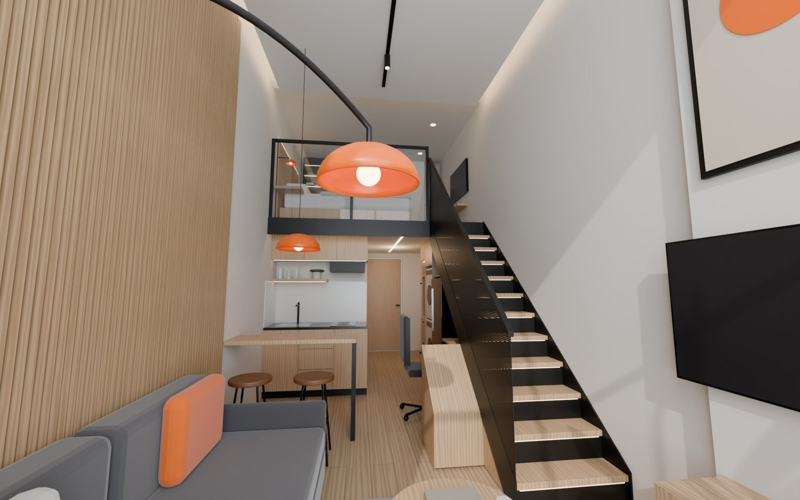
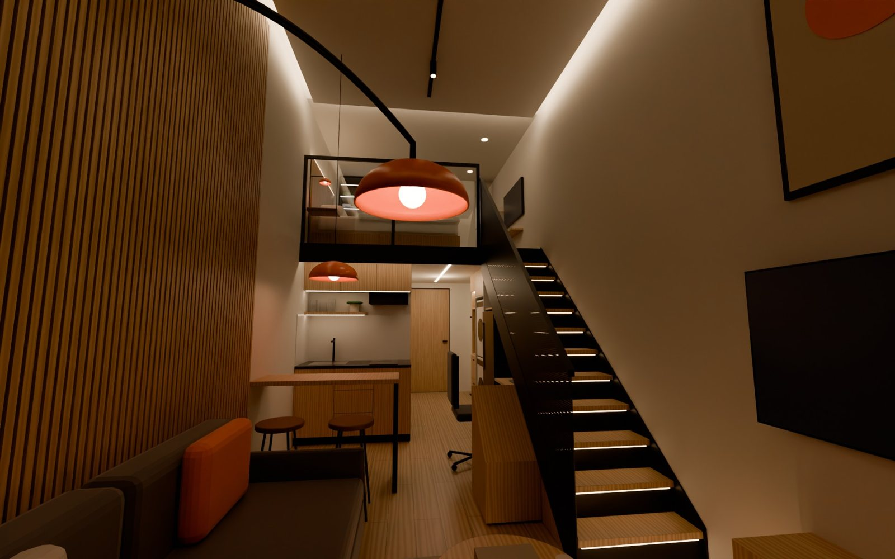
ESTILO A
Roble y naranja
Minimalismo cálido: roble claro, acero negro y muro blanco. El color aparece solo en tres lámparas naranja. La luz indirecta hace flotar el techo de la doble altura.
Sale de tus fotos del loft con escritorio bajo la escalera y baranda de vidrio, de los clósets alrededor de la cama, de las lámparas naranja tipo hongo y arco, y de la luz indirecta en drywall.
Piso
Roble claro en tablas largas
Salón
Pared de listones de roble de 4 m
Escalera
Lámina negra, huella en roble, malla negra
Cocina
Roble y piedra negra
Baño
Mármol blanco, torre de ducha negra
Luz
Cielo raso con LED perimetral, escalones, spots
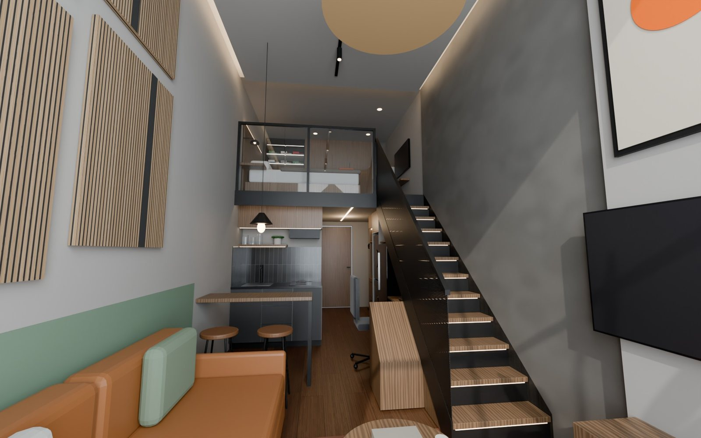
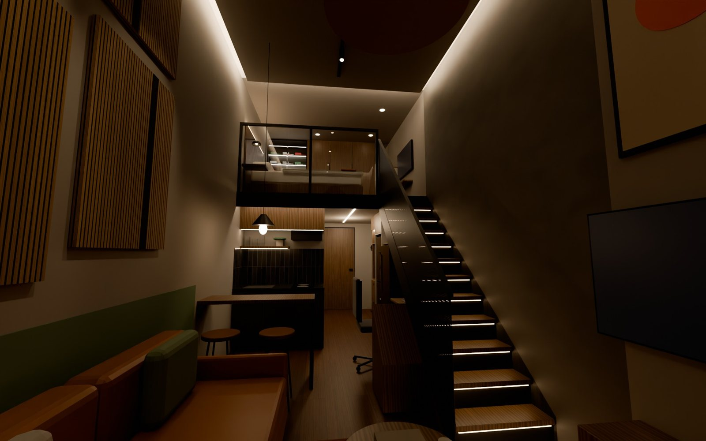
ESTILO B
Loft industrial
Materiales crudos y oscuros: microcemento en el muro de la escalera, nogal, acero negro y cuero cognac. Una lámpara grande de ratán llena la doble altura. Es el más acogedor de noche.
Sale de Tuliv Polo (escalera negra, cocina de madera y mesón negro), del loft de doble altura (malla perforada, paneles acústicos con franja negra, media pared verde, lámpara de fibra) y del render de UNO62 en concreto. Sin ladrillo a la vista: va microcemento.
Piso
Nogal en tablas anchas
Salón
Media pared verde salvia y 4 paneles acústicos
Escalera
Negra, huella en nogal, contra el microcemento
Cocina
Frentes negros, azulejo grafito vertical
Baño
Mármol verde salvia y negro
Luz
Cielo raso con LED, riel de spots, ratán cálido
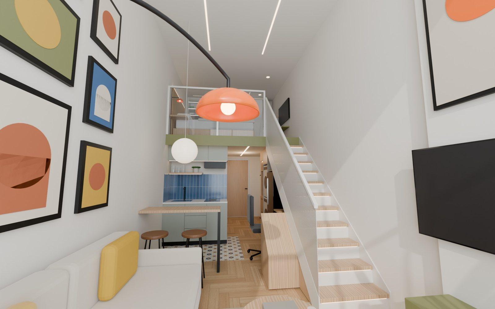
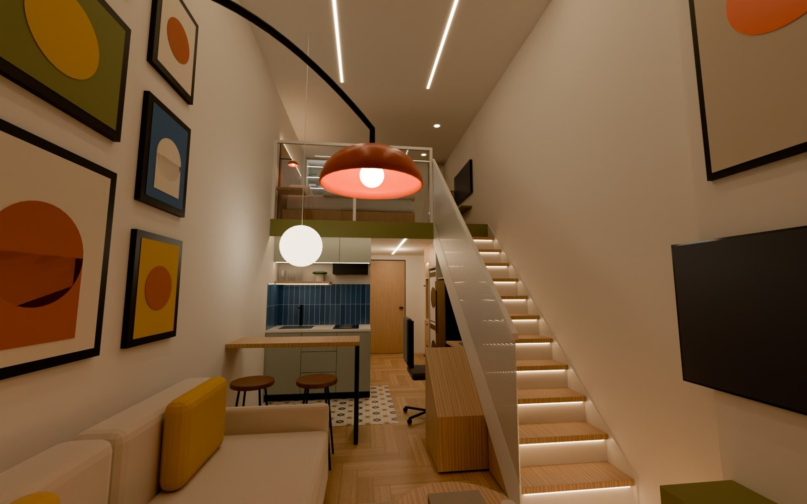
ESTILO C
Retro mediterráneo
Alegre y luminoso: piso en espina de pescado, baldosa hidráulica en la cocina, azulejo azul y colores tierra (mostaza, oliva, terracota). Una galería de cuadros llena la pared alta.
Sale del apartamento con piso en espina y baldosa hidráulica (cocina gris con nicho de roble y azulejo azul vertical), de tu foto del baño (mueble de madera, espejo redondo, grifo terracota, ducha verde), del render con galería de cuadros, cojines mostaza y mueble oliva, y de los clósets blancos brillantes.
Piso
Roble claro en espina; hidráulica en la cocina
Salón
Galería de 8 cuadros, mueble TV oliva
Escalera
Blanca con huella en roble
Cocina
Gris salvia, azulejo azul, cuarzo blanco
Baño
Enchape beige y ducha en mármol salvia
Luz
Líneas de LED en el techo, globo opal, escalones
Comparación
A · Roble y naranja
B · Loft industrial
C · Retro mediterráneo
Sensación
Sereno y luminoso
Cálido y nocturno, con carácter
Alegre y colorido
Muros
Blanco
Microcemento gris claro y gris medio
Blanco cálido
Mezzanine
Clósets blanco mate, cabecero de listones
Clósets en nogal, lino grafito y óxido
Clósets blanco brillante, manta mostaza
Lámparas
Colgante, arco y hongo naranja
Ratán grande, colgante negro con bombillo vintage, hongo naranja
Globo opal, arco y hongo naranja
Se siente el espacio
Más amplio
Más recogido: absorbe luz
Amplio, con mucho movimiento visual
Obra que más pide
Cielo raso flotante y pared de listones
Microcemento y paneles acústicos
Piso en espina (más corte), cerámicas especiales
Mantenimiento
Fácil
Fácil; el microcemento va sellado
Medio: la baldosa y los colores piden orden
También se pueden mezclar: por ejemplo, la base de A con el microcemento y el cuero cognac de B, o con la baldosa hidráulica y el azulejo azul de C en la cocina.
Análisis del diseño D
Todo lo de esta página es del diseño D en vino, el que elegiste. Las medidas de arquitectura no se tocaron: 3,00 × 7,78 m, baño de 1,23 × 2,34, cocina de 1,34, mezzanine de 3,09 m y doble altura de 4,20. Cuando te entreguen el apartamento se ajusta con tus fotos y medidas reales.
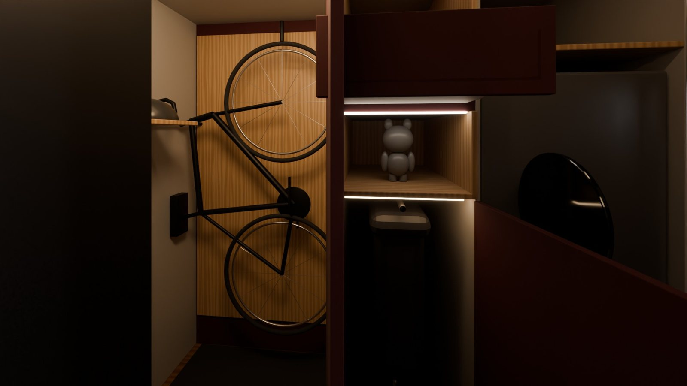
Entrada abierta: bici, locker de la moto y torre de ropas
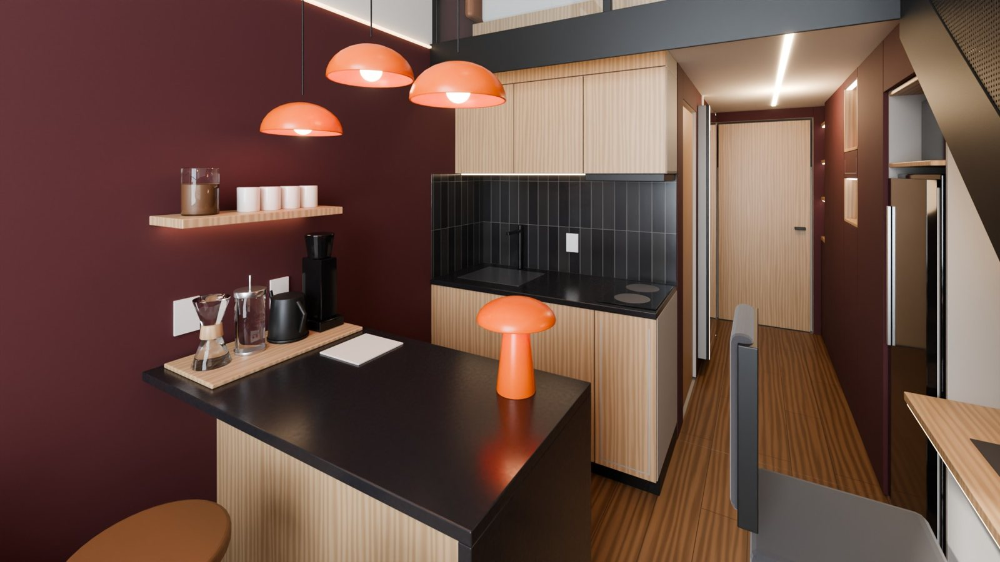
Cocina, barra conectada y estación de café
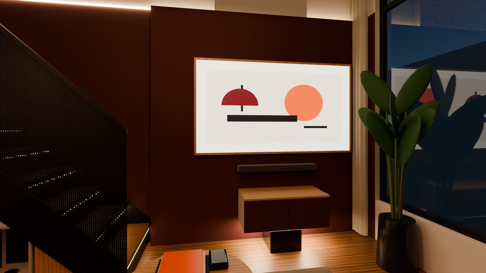
TV de 75" tipo cuadro: apagado queda una obra
1. Entrada: todo oculto y a la mano
Nicho de llegada junto a la puerta: repisas de roble con luz para las llaves, una figura y una planta; adentro quedan los interruptores.
Bici de ruta colgada de la rueda delantera detrás de dos puertas ocultas, con bandeja de caucho y luz interior.
Locker de la moto: el casco abajo y la chaqueta en una barra extraíble, con ventilación oculta. Encima, la galería: nicho, cajón, nicho.
Torre de ropas y nevera con microondas al final del frente.
Espejo con bisagras de 0,60 × 1,96 m frente a la galería: es la puerta de un gabinete de 6 cm para gafas, correas, llaves de repuesto y una sombrilla plegable.
2. Cocina y barra: dónde va cada cosa
Qué
Dónde
Ollas y sartenes
Los dos cajones bajos de la barra (0,60 m de ancho y 0,30 de alto cada uno)
Platos y bowls
Alacena alta izquierda, sobre el lavaplatos: te quedan de 1,55 a 1,90 m
Vasos y pocillos
Alacena alta del centro
Despensa
Alacena alta derecha y los cajones del medio de la barra
Aceites y especias
Extraíble de 30 cm bajo la estufa
Cubiertos y utensilios
Cajones de arriba de la barra
Lavaplatos eléctrico de 45 cm
Entre el lavaplatos y la estufa, con frente de roble; usa el mismo punto de agua
Aseo y reciclaje
Bajo el lavaplatos y en el cajón bajo izquierdo de la barra (dos canecas)
Café
En fila contra el muro, sobre una bandeja de roble en el extremo de la barra: molino, tetera, prensa francesa y Chemex, con dos tomas justo detrás. Tazas y café en la repisa de arriba; filtros y báscula en el primer cajón
La barra queda a la altura del mesón (0,90 m) y con la misma piedra negra, así que sirve de mesón extra para dos. Una U completa no cabe: el lavaplatos que entrega la constructora queda en la esquina y el pasillo bajaría a 0,74 m.
3. Escritorio y robot
El escritorio va de muro a muro bajo la escalera, 1,35 × 0,79 m, sin huecos: la torre del PC sobre la mesa al lado de la pantalla de 27", teclado, mouse, dos cajones y luz propia. A continuación queda el garaje del robot aspiradora con su base y su toma; el robot pasa bajo el sofá (patas de 12 cm) y bajo el mueble del TV. Al mezzanine hay que subirlo a mano.
4. Salón
TV de 75" tipo cuadro (Samsung The Frame o el de galería de LG): a ras de un muro técnico en drywall, con marco en tono madera y arte cuando está apagado. Centro a 1,35 m: altura de cuadro y de TV a la vez. La caja de conexiones va dentro del mueble.
Mueble de 0,80 m centrado bajo el TV, con frentes en vino y tapa de roble: guarda el Xbox, el router y la caja del TV. La barra de sonido va en el muro y el subwoofer debajo.
Sofá cama de 1,80 m en cuero cognac y Eames con otomana en la esquina de la ventana, con la lámpara de arco para leer.
Arte tuyo: un mapa topográfico con una ruta de ciclismo y el afiche 317. Los archivos para imprimir están en la carpeta del proyecto.
Sofá cama abierto: la cama de 1,40 × 1,90 sale hacia el TV. La mesa de centro pasa junto a la ventana y queda un paso de 0,38 m en un tramo corto frente al mueble.
5. Mezzanine
Vitrina de tenis: tus 30 pares van parados, en vertical. Cada par ocupa 22 cm de frente y caben dos filas: capacidad para 40.
Clóset de 1,68 m con dos puertas corredizas: no invaden la franja de 0,70 m para vestirse.
TV de 65" a ras del muro, con el centro a 1,22 m del piso: desde la cama se ve sin bajar la mirada.
Cama girada con cabecero en cuero, ropa de cama blanca, manta carbón y dos cajones grandes.
6. Baño
Punto
Este diseño
Referencia
Espacio libre al frente del sanitario
0,59 m (suspendido)
≥ 0,60 m
Al límite
Eje del sanitario al mueble
0,42 m
≥ 0,40 m
Bien
Eje del sanitario a la ducha
0,30 m
≥ 0,40 m
Viene así del plano
Ducha
1,23 × 1,00 m
≥ 0,80 × 0,80 m
Bien
Ventilación
sin ventana
extractor
Pedirlo o instalarlo
Microcemento oscuro, nichos con luz y sanitario suspendido caben si el desagüe queda a unos 25 cm o menos del muro. Si no, se deja el sanitario de piso y se mantiene lo demás.
7. Luz por capas
Ambiente: la ranura del cielo raso en drywall y la línea sobre la franja vino, tenue. Cálida, 2700 K.
Lámparas que caen: tres domos naranja sobre la barra y uno grande con difusor sobre la mesa de centro.
Tarea: spots empotrados dirigibles, luz bajo la alacena, escritorio y lectura en el Eames y la cama. 3000 K.
Colección: LED en la vitrina de tenis, la galería y el nicho de llegada.
Cada capa con su regulador. Para ver una película: spots apagados y ambiente al 30 %.
8. Medidas
Punto
Este diseño
Referencia
Pasillo de la entrada
0,93 m (0,85 frente al espejo)
≥ 0,80 m
Bien
Cocina a la barra
0,81 m
0,90–1,00 m
Para uno cocinando
Paso entre la barra y la escalera
0,90 m
≥ 0,80 m
Bien
Pie de la escalera
0,89 m libres
≥ 0,80 m
Corregido
Escalera
0,80 × 19,3 / 22 cm
cómoda: 18 / 25–28
Compacta
Bajo y sobre el mezzanine
2,20 y 1,88 m
tú: 1,72 m
Te sobran 16 cm arriba
TV del salón
75" a 2,5 m, centro a 1,35
2,3–3,0 m
Bien
TV del mezzanine
65" a 2,4 m
2,0–2,6 m
Bien
Barra y butacos
0,90 y 0,62 m
28 cm entre los dos
Bien
Espejo de la entrada
de 0,12 a 2,08 m
cuerpo entero
Bien
Gancho de la bici
a 2,00 m
alcanzas unos 2,15
Sin escalera
Franja para vestirse
0,70 m
≥ 0,60 m
Bien
9. Cómo abre cada cosa
En el modelo 3D, la tecla X abre y cierra todo (puertas, cajones, electrodomésticos y hasta la tapa del sanitario) y muestra hacia dónde. También guarda las sillas: los butacos entran bajo la barra y la silla, bajo el escritorio.
Pieza
Herraje
Abre hacia
Puertas ocultas (bici, locker, ropas, zapatos)
Bisagras de cazoleta de 110° con cierre suave y apertura por empuje, sin manija
El pasillo
Espejo
Bisagras de cazoleta de 110°
El pasillo
Puerta de entrada y puerta del baño
Bisagras de puerta
Adentro: la de entrada descansa contra el muro del baño; la del baño pasa a 0,29 m del mueble
Nevera, microondas y torre de ropas
Puertas de fábrica
El pasillo y la cocina
Sanitario y mueble del baño
Tapa de caída lenta y corredera oculta
Arriba y hacia la puerta
Cajones de la barra, escritorio, galería y cama
Correderas ocultas de extensión total con cierre suave
La cocina, la silla, el pasillo y la zona de vestir
Lavaplatos eléctrico
Puerta abatible del equipo, con frente de roble
Abajo, hacia ti
Alacenas altas
Bisagras de cazoleta con cierre suave
El salón (arriba está la placa del mezzanine)
Mueble del TV y gabinete de la nevera
Compás con apertura por empuje
Abajo y arriba
Clóset y vitrina de tenis
Riel superior corredizo con cierre suave
De lado: no ocupan espacio
Tres parejas no se abren al mismo tiempo: el lavaplatos eléctrico y los cajones bajos de la barra, el cajón de la galería y la puerta de la bici, y el gabinete de la nevera con la puerta de ropas.
10. Revisión de choques
El modelo pasa una revisión automática que busca piezas que se crucen, muebles dentro de los pasos y puertas o cajones que choquen al abrir. Además lo revisó Astra de ChatGPT como segundo diseñador. Resultado actual: ninguna pieza se cruza, los pasos están libres y nada choca al abrir.
El mueble del TV quedaba al pie de la escalera: ahora arranca 0,89 m después del último escalón.
Las alacenas chocaban con la placa del mezzanine al subir: ahora son batientes.
Las puertas del clóset invadían la franja de vestirse: ahora son corredizas.
La repisa del TV de arriba invadía la llegada de la escalera: se acortó.
De Astra: arte más personal, línea de luz más tenue, mueble del TV integrado al muro, tapete tejido y menos objetos en la galería.
11. ¿Se ajusta a tu vida?
Salir en moto o en bici: llaves, casco, chaqueta, bici y espejo quedan a menos de 1,5 m de la puerta.
Coleccionista: 30 pares a la vista arriba; figuras y recuerdos de viaje en la galería; libros de tenis en la mesa.
Trabajo, juego y café: escritorio completo, Xbox en el 75" con sonido envolvente y el café a un paso de la barra.
Si llega alguien a vivir contigo: barra para dos, sofá cama para visitas, lavaplatos eléctrico, torre de ropas de 14 kg y pasos de 0,85 a 0,93 m.
Lo que queda justo: la cocina sigue siendo de 1,34 m y el pasillo de cocina de 0,81 m es para una persona cocinando.
12. Con gente: tú en el apartamento y diez personas en la sala
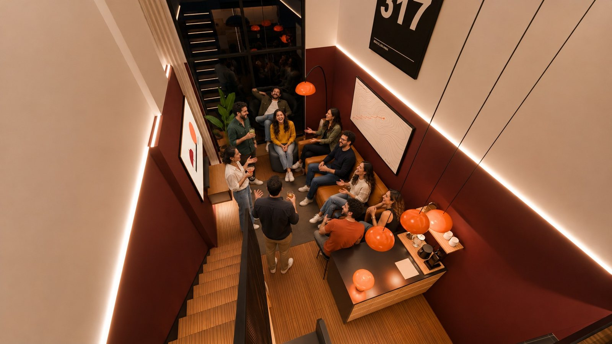
Diez personas: 7 sentadas y 3 de pie
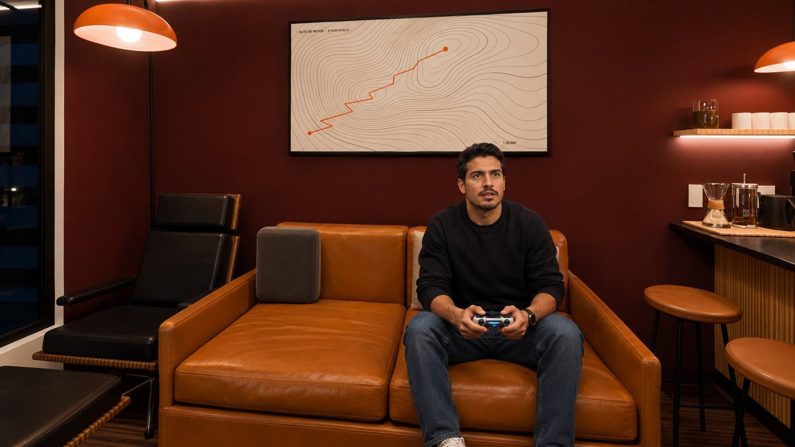
En la sala
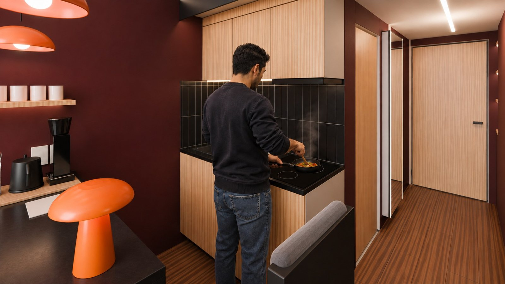
Cocinando
Estas tres son fotos hechas con IA (ChatGPT) sobre los renders del modelo: el espacio es tu diseño y las personas son genéricas, no retratos. Puede haber pequeñas diferencias con el modelo. Diez personas caben así: tres en el sofá, una en el Eames, una en la otomana, dos en los butacos y tres de pie; es una reunión apretada pero posible, y cómodas caben seis u ocho. En la pestaña Renders están las mismas escenas con maniquíes a escala de 1,72 m, además de la cama y la escalera.
13. Entorno: qué tan alto quedas frente a los vecinos
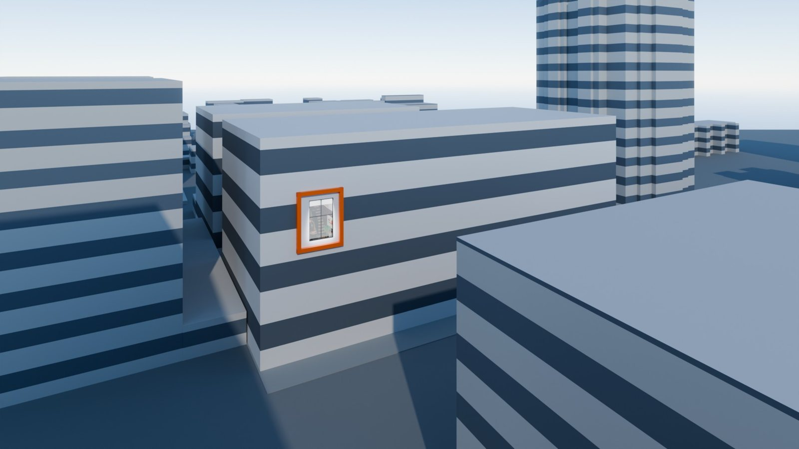
Desde la calle: tu apartamento marcado en naranja
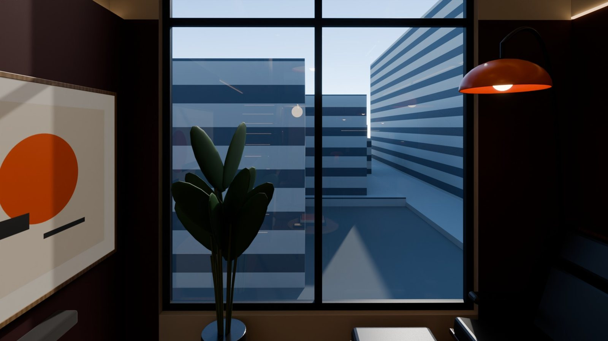
Lo que verías desde tu ventana
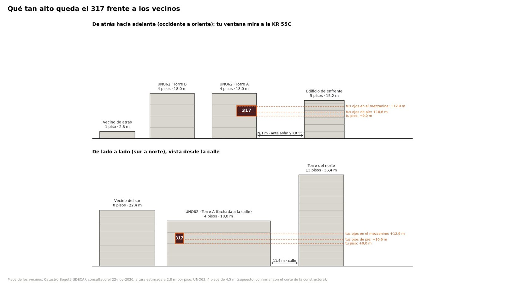
Alturas comparadas
Los vecinos están con la huella y el número de pisos de Catastro Bogotá; son solo volúmenes. Después los revisé en la panorámica de Street View que mandaste (tomada sobre la KR 55C, cuando el lote aún era la sala de ventas) y coinciden: al frente está El Portal de San Diego (KR 55C n.º 162-50), cinco pisos de ladrillo sobre el parqueadero; al sur, un edificio de siete pisos sobre el primero; al norte, una torre de 13 pisos. Tu ventana mira al oriente, hacia la carrera: te entra el sol de la mañana.
Hacia
Qué hay
Altura
Distancia
Cómo queda frente a ti
Frente (oriente)
El Portal de San Diego: 5 pisos sobre el parqueadero, al otro lado de la carrera; a los lados, casas de 2 y 3 pisos
15,2 m
19,1 m
Tu piso queda a la altura de su cuarto piso; su cubierta está 4,6 m sobre tus ojos de pie
Atrás (occidente)
Construcciones de 1 piso detrás de la Torre B
2,8 m
detrás del lote
No te afecta: tu apartamento no tiene ventanas hacia atrás
Lado sur
Edificio de 8 pisos
22,4 m
4,8 m del extremo de la torre
Es 4,4 m más alto que UNO62; queda al lado, no lo ves desde tu ventana
Lado norte
Torre de 13 pisos, al otro lado de la calle
36,4 m
11,4 m del extremo de la torre
Es 18,4 m más alta que UNO62; tu apartamento está en el otro extremo
UNO62
4 pisos de doble altura en dos edificios (licencia modificada de 5 a 4 pisos)
18,0 m
Tu piso a +9,0 m, tus ojos de pie a +10,6 m y en el mezzanine a +12,9 m
Ya confirmado: los pisos de los vecinos (Catastro y Street View) y que UNO62 es de 4 pisos (la modificación de la licencia habla de dos edificaciones de cuatro pisos). Falta confirmar con el corte de la constructora: que el plano de localización está con el norte arriba (por eso la Torre A queda sobre la carrera), que cada piso mide 4,5 m y que el antejardín es de 3,0 m. La altura de los vecinos se estimó a 2,8 m por piso; El Portal puede ser hasta un metro más alto porque su parqueadero sobresale casi un piso entero.
En la Ciudad 3D está todo el barrio con los edificios de Catastro, los cerros, el sol real por fecha y hora (hoy entra sol directo por tu ventana de 06:46 a 11:51) y el vuelo hasta adentro del apartamento.
El modelo E alarga la placa 1,51 m junto a la escalera (+3,3 m²). Se puede, pero es una ampliación: necesita licencia de construcción, acta de la copropiedad y diseño estructural, puede chocar con la altura mínima de 2,30 m en Bogotá y te quita el amparo de la garantía por obras posteriores. Hoy no te lo recomiendo; primero cierra la reclamación con la constructora. El modelo E quedó con el mobiliario anterior a los últimos cambios.
15. Para confirmar cuando te entreguen
Medidas reales de muros, alturas y ventana, con fotos.
Distancia del desagüe del sanitario al muro.
Dónde quedó la conexión de la lavadora y el plano eléctrico.
Si la secadora de la torre es de bomba de calor (la torre va cerrada).
Que la escalera no viene incluida: está en el presupuesto.
El corte del edificio: altura de cada piso y hacia dónde mira tu ventana.
Plantas amobladas con medidas
Medidas interiores en metros, tomadas del plano de tipología de los aptos 217, 317 y 417 de la Torre A (Anexo 20, noviembre de 2026). Los muebles van a escala. La distribución es la misma en los tres estilos.
Primer piso · nivel ±0,00
Mezzanine · nivel +2,32
Muro y columnaMueble fijoProyección o zonaLámpara naranja● Agua · ○ desagüe▲ Toma propuesta · ▲ eléctrico de la entrega
Tomas y conexiones
Las hidráulicas son las del plano de la constructora: ducha, sanitario, lavamanos y lavaplatos no se mueven. La constructora no ha entregado plano eléctrico, así que las tomas en naranja son una propuesta para coordinar con el electricista. Las láminas en PDF están en D:\Diseño Apto\04 Planos y conexiones.
#
Punto
Altura
Origen
Cómo te lo entregan y cuánto falta
Según los correos de la constructora (19-may-2025 y 25-nov-2025), el apartamento se entrega en obra gris mejorada. Las fuentes y el detalle están en D:\Diseño Apto\06 Entrega de la constructora.
Lo que entregan
Piso en placa de concreto a la vista.
Muros pañetados y pintados; techos en concreto a la vista (estructura metálica en el baño y la entrada).
Mezzanine con placa de 12 cm y 8,77 m².
Baño enchapado en piso y ducha hasta 2,00 m; sanitario, lavamanos y grifería tipo VIS.
Cocina: mueble base sin puertas, mesón en piedra, estufa eléctrica de 2 puestos y pileta.
Ventana de 2,00 × 3,30 m en aluminio negro; puertas de entrada y baño en madera.
Puntos de luz con lámparas de sobreponer; conexiones hidráulicas para la lavadora.
Bonos de $1.000.000 para escrituración y $1.000.000 para remodelación.
Lo que no viene
La escalera al mezzanine: el correo del 19-may-2025 lo dice expresamente.
El piso de todo el apartamento fuera del baño.
La baranda del mezzanine.
Puertas y alacena de la cocina.
Todo el mobiliario fijo: clósets, vitrina, galería, puertas ocultas, escritorio y cajones.
La iluminación LED y las lámparas.
Los electrodomésticos, salvo la estufa, y los muebles.
Presupuesto del diseño D
Ítem
Cantidad
Bajo
Alto
Fuente
Cargando…
Renders
Imágenes del mismo modelo en Blender (Cycles), con la luz del día por la ventana y con la iluminación LED de noche.
Ficha del diseño D
Carácter sin recargar para 33 m² en dos niveles. Una franja vino sube hasta la línea del mezzanine y arriba todo es blanco. Roble, acero negro, cuero cognac y piedra negra; el naranja queda solo en las lámparas. Nada de ladrillo, paneles de madera en las paredes ni colores pastel.
Primer piso
Entrada: nicho de llegada con luz, bici de ruta y torre de ropas tras puertas ocultas, locker de la moto con la galería encima, nevera y espejo con bisagras.
Cocina de 1,34 m con lavaplatos eléctrico, alacena alta y barra conectada de 1,30 m con seis cajones y la estación de café.
Escritorio de muro a muro bajo la escalera, con el PC, y garaje para el robot.
Salón en doble altura: sofá cama de 1,80 m, Eames con otomana, TV de 75" tipo cuadro y cielo raso con luz indirecta.
Baño en microcemento oscuro con nichos iluminados.
Mezzanine
Cama de 1,40 × 1,90 girada, con cabecero en cuero sobre un bloque vino y dos cajones.
Vitrina de tenis de 0,95 m: 30 pares en vertical, capacidad para 40.
Clóset de 1,68 m con puertas corredizas y módulo con espejo.
TV de 65" a ras del muro, frente a la cama.
Baranda en vidrio de 1,10 m.
Paleta
Vino franja y puertas ocultas
Blanco muros altos y cielo raso
Roble medio piso y escalera
Roble claro muebles
Cuero cognac sofá y cabecero
Negro acero y mesón
Naranja solo lámparas
Iluminación
Dónde
Qué es
Temperatura
Cielo raso del salón
Cinta LED en la ranura perimetral del drywall, luz indirecta
2700 K
Línea de la franja
Perfil fino a +2,32 m, tenue
2700 K
Barra
Tres lámparas colgantes tipo domo, naranja
2700 K
Salón
Lámpara colgante grande con difusor, lámpara de arco y cuatro spots empotrados dirigibles
2700–3000 K
Cocina y café
Cinta bajo la alacena y bajo la repisa del café
3000 K
Escalera
Cinta bajo la nariz de cada escalón
2700 K
Escritorio
Cinta bajo la escalera y bajo el borde de la mesa
3000 K
Entrada
Nicho de llegada, galería, halo del espejo y luz interior de los clósets
3000 K
Dormitorio
Sobre el cabecero, bajo la cama y lámparas de lectura
2700 K
Vitrina de tenis
Cinta en cada nivel
3000 K
Baño
Nichos, espejo, bajo el mueble y línea en la ducha
3000 K
Cinta de 24 V con CRI de 90 o más, en perfil con difusor, y un regulador por capa: ambiente, colgantes, tarea y colección.
Muebles y medidas
Mueble
Medida
Material
Frente de la entrada
3,09 × 0,73 m, h 2,20
Puertas ocultas en vino, nichos en roble
Espejo con bisagras
0,60 × 1,96 m, 8 cm de fondo
Marco negro, halo de luz
Torre de ropas
0,60 × 0,66 m, h 1,66
Lavadora y secadora en un cuerpo
Lavaplatos eléctrico
0,45 m de ancho
Frente de roble
Barra
1,30 × 0,67 m, h 0,90
Piedra negra, seis cajones en roble
Butacos (2)
asiento h 0,62 m
Cuero café, acero negro
Escritorio
1,35 × 0,79 m, h 0,75
Roble, de muro a muro
Sofá cama
1,80 × 0,95 m; cama 1,40 × 1,90
Cuero cognac, patas de 12 cm
Sillón tipo Eames
0,84 × 0,85 m + otomana
Cuero negro y nogal
Mesa de centro
Ø 0,64 m
Roble, patas negras
Tapete
1,75 × 1,75 m
Tejido plano carbón y arena
TV del salón
75": 1,68 × 0,96 m, centro a 1,35
Tipo cuadro, marco en tono madera
Mueble del TV
0,80 × 0,37 m, flota a 0,22
Frentes en vino, tapa de roble
Cama
1,40 × 1,90 m
Base en roble con dos cajones
Clóset
1,68 m, fondo 0,60, h 1,88
Blanco mate, corredizo
Vitrina de tenis
0,95 × 0,60 m, h 1,86
Negro y vidrio, cinco niveles con luz
TV del mezzanine
65": 1,44 × 0,83 m
A ras del muro
Lo que hay que confirmar con la constructora
El plano de tipología no dibuja la escalera. La puse contra el muro largo, subiendo hacia el mezzanine, como en los renders del proyecto. Hay que confirmar dónde la entregan y si viene incluida.
Alturas: 4,20 m libres según el folleto. Bajo el mezzanine dejé 2,20 m y una losa de 12 cm, lo que da 1,88 m libres arriba. Si la losa queda de 10 cm, arriba son 1,90 m. Con tu estatura (1,72 m) te sobran 16 cm al llegar arriba.
La ventana mide 2,07 × 3,30 m en el plano. El correo del 25 de noviembre de 2025 dice 2 × 3,30 m.
Dónde queda la conexión de la lavadora. El plano sombrea una zona de 0,76 × 0,83 m junto a la entrada que parece ser el punto de ropas; si queda en otro lado, la torre de ropas cambia de orden con el locker.
Según ese mismo correo, la constructora entrega paredes pintadas, baño enchapado, mesón en piedra, mueble bajo de cocina, mezzanine, ventana y puertas en madera. Lo demás de esta propuesta (escalera, piso, clósets, cielo raso, LED y muebles) corre por tu cuenta.
Archivos en tu PC
Todo está en D:\Diseño Apto; el archivo LEEME.md dice qué hay en cada carpeta.
Modelo de Blender: 03 Modelos Blender\apto317_D.blend. Con el modo visor, las teclas 1 a 9 cambian de vista y la X abre cajones y puertas.
Fotos: 02 Renders\D Definitivo, con el video recorrido.
Planos en PDF: 04 Planos y conexiones. Presupuesto en Excel: 05 Presupuesto.
Arte para imprimir: 08 Motor 3D\texturas\arte_ruta.jpg y arte_317.jpg.